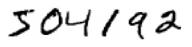
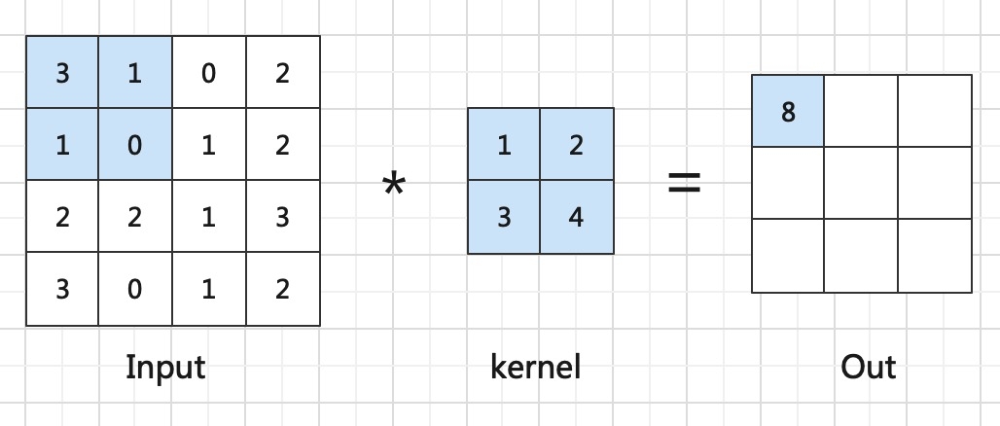
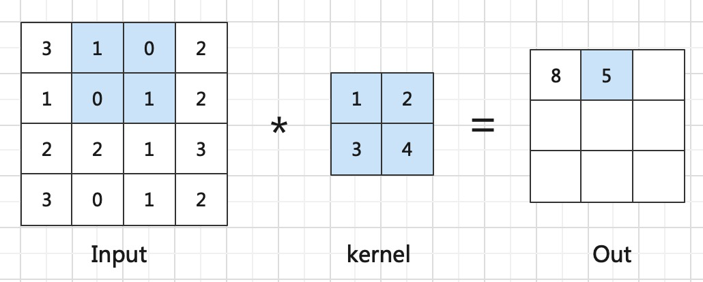

关于作者
关于作者
卷积层
这里我们开始先思考一个问题，
故而本节将介绍卷积是怎么实现的。
二维卷积
通过你聪明的大脑你肯定瞬间能认出下面这些数字，但是如果是计算机呢？如何让他们从存储时候的二进制，经过网络推理得到数字结果。

根据我们之前小节的工作，我们可以将图像转成一维输入，然后利用多层神经元训练学习，得到最终的10个输出，分别代表0-9的预测结果。
但这样就破坏了图像空间结构，训练质量肯定会大打折扣。因此我们在这里引入用于图像的
Important
这里介绍到二维卷积，是因为与之对应的还有处理时间序列数据、音频数据等一维向量的一维卷积。以及处理立体数据的三位卷积。 此外, 需要区别的是一维卷积和1x1卷积并不是相同的概念。
如下图所示，是一个简单的卷积层

首先我们先介绍一下
和通常⼀样，我们把输⼊像素连接到⼀个隐藏神经元层。但是我们不会把每个输⼊像素连接到每个隐藏神经元。相反，我们只是把输⼊图像进⾏⼩的，局部区域的连接。
具体来说，这个小的局部的区域就被称为
在计算每个输出时，实现方式如图中淡蓝色的部分，将局部感受野与卷积核进行对应位置的元素乘再求和。这样就得到输出最左上角的值。
之后需要将局部感受野进行平行和垂直移动一格，每次移动都与卷积核计算得到输出。如横向平移一个的操作如下

如此循环，得到最终的输出

这样我们便完成了一个卷积核对输入的卷积操作。我们之后将这样的输出称为
步长
在我们的局部感受野和卷积核的计算过程中，我们每次将局部感受野或平行或垂直移动一格，这其实是默认
那能不能设置成其他值呢？当然可以，比如说如果我们设置成2，输出的第二行和第二列都会空过去不再计算，如此得到最终2*2的输出，表示如下

这里可以留意一下，当步长为2时，网络的输出变成输入尺寸的一半，这在之后的网络设计中可能会用到。
padding
细心的你可能发现了，我们在卷积之后的尺寸和输入相比变小了！这其实在应用中会带来一定的麻烦，为解决这个问题。 一般将输入的边缘补0，然后再与卷积核进行卷积计算，这样得到的特征图会保持和输入相同的尺寸。

共享权重和偏置
你可能发现，我们在计算特征图时候，使用了相同的卷积核对输入进行操作。这被我们称为
其实图中未展现出来的是，我们会对Out统一加相同的偏置，这个偏置被称为
记得刚提到的卷积核的概念吗？他更具体来说包含共享权重和共享偏置。如此便实现了神经元的W*x+B的操作。
多输入
如果是minist这种黑白图像，输入确实是只有一个
当输入是多通道时，我们也需要定义和输入通道数相同的卷积核，然后每个卷积核和他对应的输入层进行上面的卷积操作。 那这样输出是不是也会有多个通道，确实，但我们会将这多个通道的输出对应位置求和。实现过程如下图所示
Important
通道，即有多少个输入的特征图

多输出
但我们定义了和输入相同数量的kernel，结果只得到了一个输出。如果是作为输出层也可以用，但如果是隐藏层呢，我们一般希望能有多个层，那怎么得到多输出呢？ 我们重复上面的多输入过程就好了，定义多个 与输入通道数相同的卷积核。这样就能得到多个输出了。具体实现如下图所示

pytorch实现卷积
你说这么复杂，要按照之前一样写代码岂不是要累死。其实不用担心，早有大佬设计了
如：此处的pytorch中的卷积实现代码如下
torch.nn.Conv2d(in_channels, out_channels, kernel_size, stride=1, padding=0, bias=True)
具体参数解释如下：
- in_channels: 定义输入的通道数
- out_channels: 定义输出的通道数
- kernel_size: 定义卷积核的尺寸，实践中我们经常默认为3
- stride: 定义步长，一般来说默认为1
- padding: 定义对特征图补0的数量
- bias: 是否使用偏置
至此我们便介绍完了卷积神经网络中最基本的卷积操作。对他的深入理解将在之后介绍。